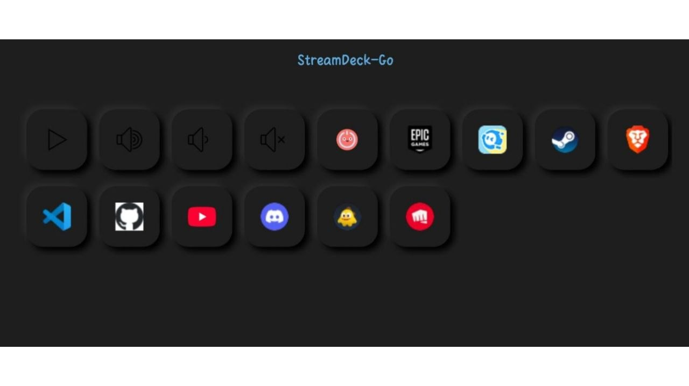
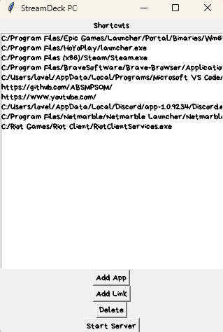

Themes
A customizable control dashboard for PC automation and productivity. Map keys, trigger actions, and streamline your workflow with a beautiful neumorphic interface.


StreamDeck-Go is a customizable desktop control dashboard designed to simplify PC automation and enhance productivity. It enables users to map shortcuts, launch applications, control system functions, and trigger workflows through an intuitive and visually refined interface.Built with a focus on flexibility and performance, StreamDeck-Go transforms any secondary device into a powerful control hub. Whether managing daily tasks, controlling media, or streamlining complex actions, it provides a seamless and efficient user experience.The application combines a modern neumorphic design with real-time responsiveness, making it both visually engaging and highly functional for developers, creators, and power users.
Setup & Usage:
1. Run the StreamDeck-Go desktop application (.exe) on your PC and start the server.
2. Install the mobile application (.apk) on your phone.
3. Ensure both your PC and mobile device are connected to the same Wi-Fi network or internet.
4. Once the server starts, the mobile app will automatically detect the PC and connect without needing to enter the IP address manually.
5. You can also connect by scanning the QR code if needed.
6. From the desktop interface, use "Add App" or "Add Link" to create custom shortcuts.
7. Access and trigger these shortcuts directly from your mobile dashboard.
Once connected, your phone becomes a real-time control panel for your PC.